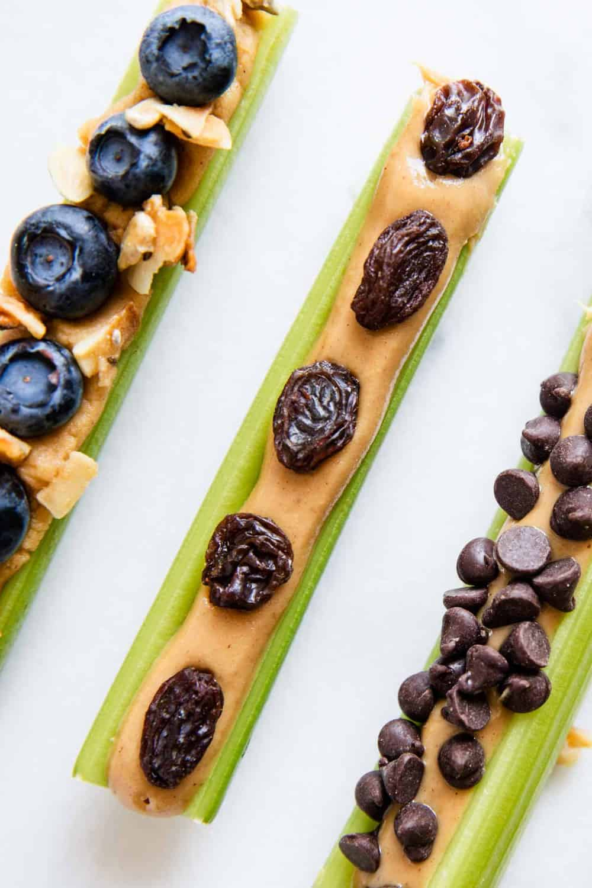

Ants on a Log

Description
It's celery with peanut butter.
Oh, and some raisins.
Ingredients
- 1 thing of celery
- 1 jar of peanut butter
- 1 handful of raisins
Steps
- cut up your celery to however big you want your logs
- fill the celery gap with peanut butter
- put some raisins on it